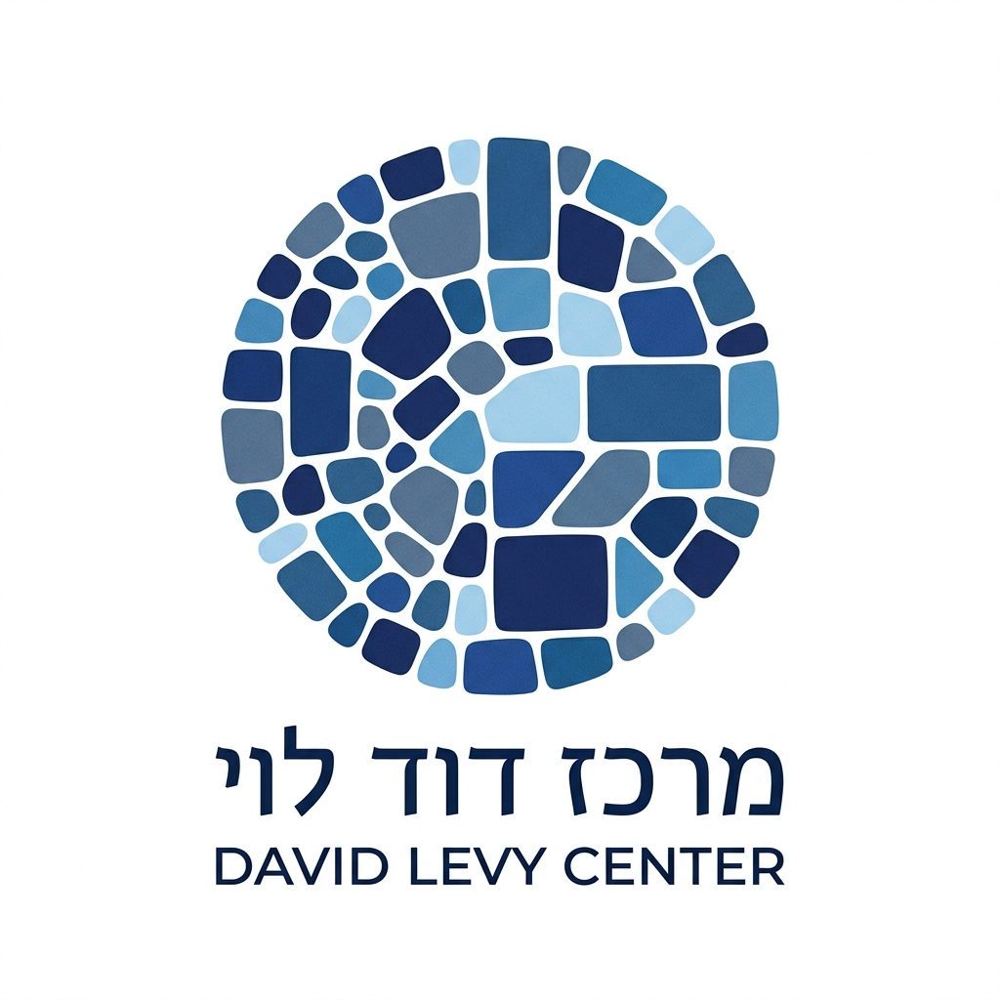
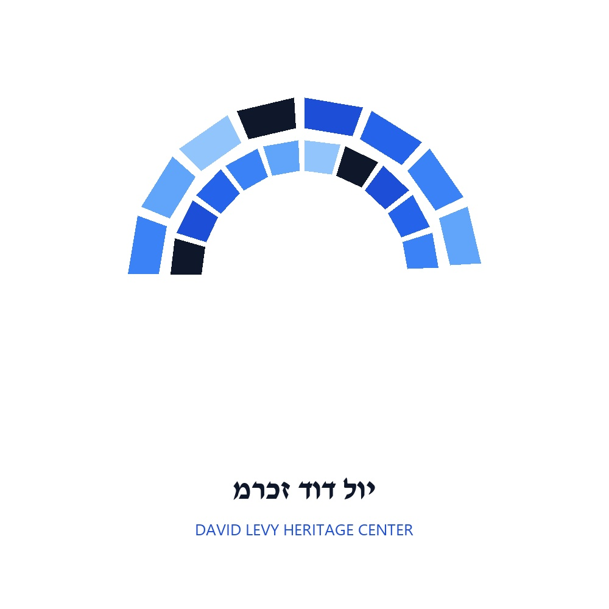

הצעה 1: סמל הפסיפס המעגלי המלא
תפיסה: מילוי מלא 100% — תמונה חברתית אחת שלמה
- הרעיון והצורניות: דיסק מעגלי מלא ושלם (ללא חלל ריק במרכז) המורכב מאבני פסיפס בגדלים וצורות משתנות, המשתלבות זו בזו במבנה הרמוני.
- השראה מתוך מסמך היסוד: ייצוג ישיר לחזון הפסיפס החברתי מתוך נאומיו של דוד לוי — חיבור תושבי ערי הפיתוח, העולים החדשים, אנשי עבודת הכפיים והציבור המסורתי לכדי תמונה לאומית מאוחדת ושלמה.
- פלטת צבעים: מנעד עשיר של גווני כחול ממלכתי (מכחול נייבי עמוק ועד תכלת מים בהיר) המקרין כבוד, ממלכתיות ואיזון.
הצעה 2: פסיפס האריחים האדריכלי המעגלי
תפיסה: אריחי קרמיקה אדריכליים בחיתוך חד וניגודיות גבוהה
- הרעיון והצורניות: אריחי קרמיקה ישרים (מלבנים וריבועים בחיתוך אדריכלי קריספי) במבנה מעגלי היקפי בעל הפרדה ברורה ורווחים לבנים מודגשים.
- השראה מתוך מסמך היסוד: מבטא את מפעל הבנייה והשיכון (פרויקט שיקום השכונות ב-160 שכונות ועיירות פיתוח והקמת 230 יישובים חדשים).
- שרידות בדפוס: מובטחת חדות מלאה וקריאות מושלמת בכל סוגי ההדפסה — כולל נייר עיתון, מדפסות משרדיות פשוטות והדפסים קטנים.
הצעה 3: סמל קשת "גשר" והמנהיגות הממלכתית
תפיסה: מחווה ישירה לתנועת "גשר" והחיבור בין הפריפריה למרכז
- הרעיון והצורניות: קשת אדריכלית וגשר עשוי אריחי פסיפס משולבים הפורצים קדימה וכלפי מעלה במבנה קווים נקי ושלם.
- השראה מתוך מסמך היסוד: מחווה לתנועת **"גשר"** שהקים והוביל דוד לוי — הגשר המחבר בין הפריפריה החברתית והגיאוגרפית לבין מרכזי ההנהגה והמדינה, ובין עולים לוותיקים.
- ערכי המותג: מראה מוזיאלי, ממלכתי ומכובד המעניק תחושת יציבות, אופק והמשכיות.
הצעה 4: קשת הפסיפס האורגני והבנייה בשיכון
תפיסה: אבנים במבנה קשת אופקית המשלבת רכות ועוצמה
- הרעיון והצורניות: אבני פסיפס במבנה קשת אדריכלית עולה מעל קו אופק, בשילוב טקסטורה אורגנית רכה בעלת מנעד כחולים עמוק.
- השראה מתוך מסמך היסוד: השילוב בין מנהיגותו השורשית שצמחה מעבודת כפיים בבנייה בבית שאן לבין הפיכתו לשר הבינוי והשיכון, סגן ראש הממשלה ושר החוץ.
- שימושיות: מתאים במיוחד לשלטים מוסדיים, עמודי שער, כותרות מסמכים ומוצרי מיתוג ייצוגיים.

הצעה 5: גשר החיבור הלאומי וקיבוץ גלויות
תפיסה: קשת כפולה המבטאת חיבור קהילות ודיפלומטיה בינלאומית
- הרעיון והצורניות: שתי קשתות פסיפס משולבות היוצרות גשר כפול ודינמי בגווני כחול קונטרסטיים.
- השראה מתוך מסמך היסוד: פועלו כשר החוץ (כינון יחסים דיפלומטיים עם 34 מדינות בעולם, ביטול החלטת האו"ם המשווה ציונות לגזענות) והנחלת ערך אחדות העם.
- אופי המותג: מודרני, זכיר, רב-ממדי ומתאים לחוג הידידים, לאפליקציות ולרשתות החברתיות.